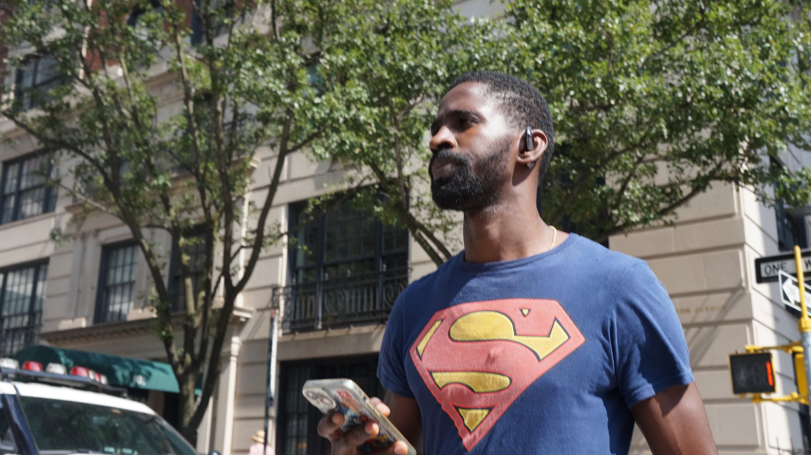
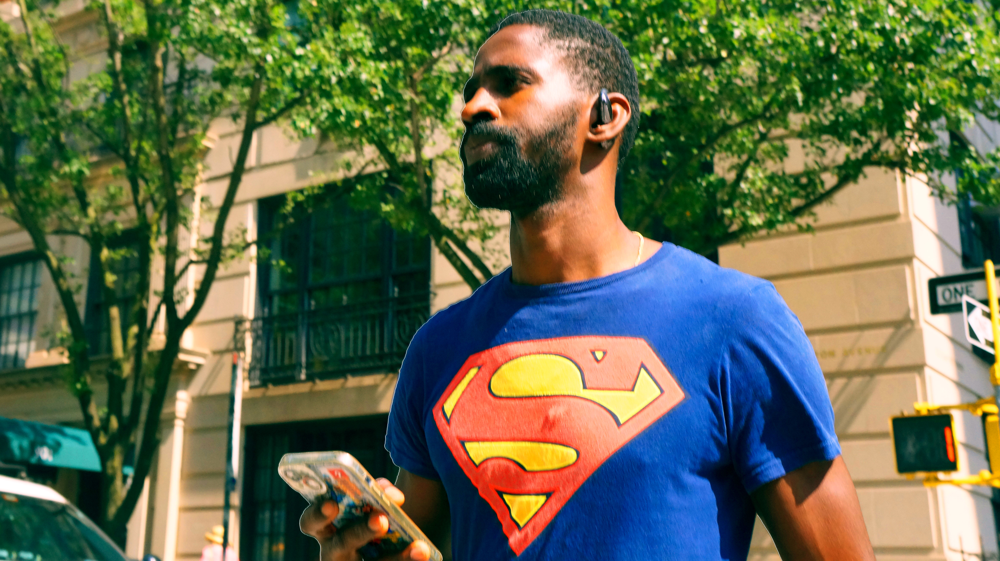
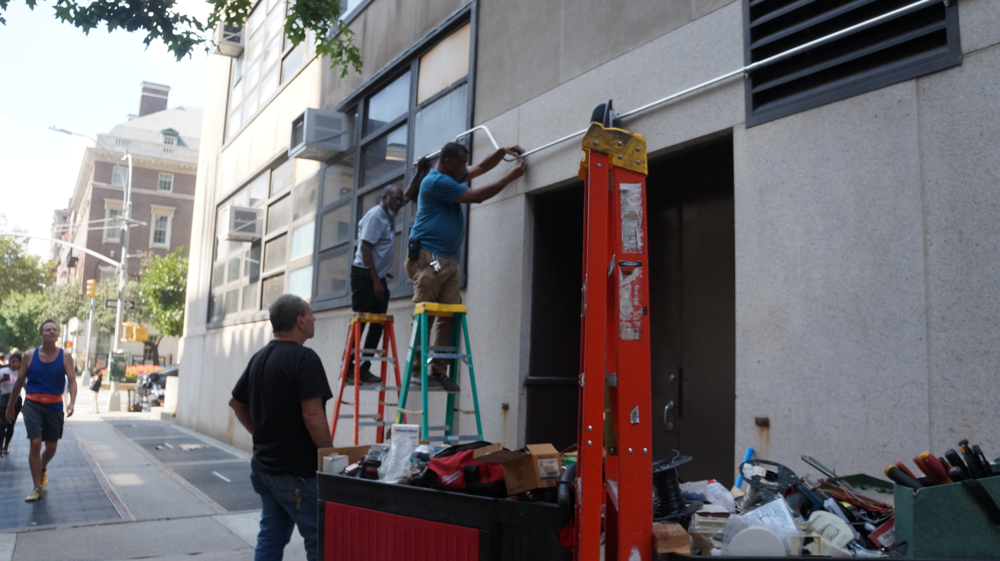
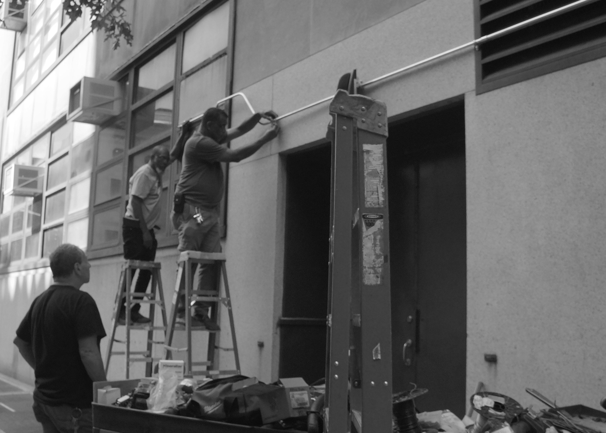

When given the opportunity to go take photos during class time for my Cropping and Resizing assignment I chose to take a run and gun “Street Photography” approach. For my first photo I chose an image of a man going across the Cross walk wearing a superman shirt. I chose to shoot the image from below to give the image a more powerful feeling and make the man seem heroic. When I edited the photo I zoomed in on the subject to emphasize his importance and I also turned up the saturation to make the reds, blues,greens and his skin tone more vibrant, making the image look more dynamic and cinematic. For my second image I took a photo of a group of maintenance men fixing a pipe on the side of Hunter College. When I was editing the photo I cropped it to give the photo a more satisfying composition and create a leading line with the pipe that led directly into the corner of the image. It also centers the viewers eyes on the subjects of the image and gets rid of unnecessary background. I chose to get rid of the color in the photo and make it black and white. I chose to do this to give the image more depth and to dramatize the photo.
HOME